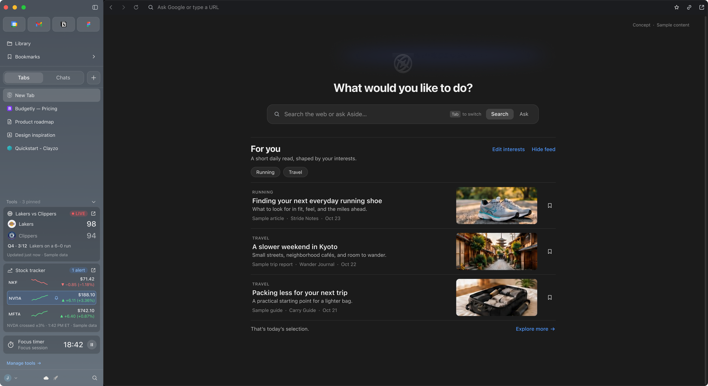
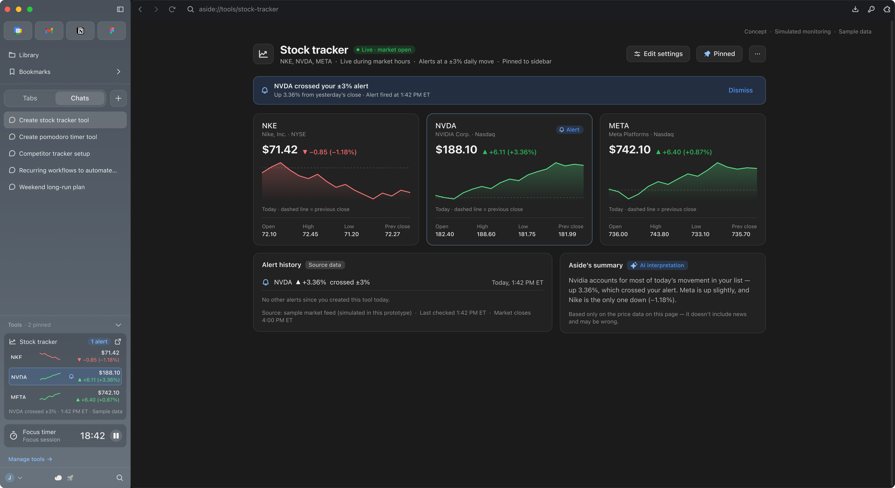

An Aside concept: tools you describe in chat, a sidebar built around how people actually browse, and a feed you set yourself.

Recently, I fell down the AI browser rabbit hole. It started with Chrome slowing down and unexpectedly quitting on me.
Until then, Chrome was just where the internet happened. Work, shopping, trip planning, and whatever I absolutely needed to research at 2 AM.
A portfolio I liked. A running shoe review. A job posting. Things I kept open because I’d “come back to them later.” As someone with ADHD, that growing collection of unfinished business could feel overwhelming.
I wasn’t alone. In the first in-depth study of browser tabs in over a decade, Carnegie Mellon researchers found people kept tabs open as reminders, or because they feared having to search for the information again—even as the pile left them overwhelmed.1
Then I found Arc, and suddenly I had opinions about browsers.
Its organization and personality made me pay attention to an interface I’d mostly taken for granted. That curiosity led me to Dia, Comet, and eventually Aside.
I liked parts of each. Dia’s Morning Brief caught my attention. Aside felt familiar, and I appreciated being able to connect a supported AI subscription I already used instead of paying additionally for another AI model.
As I dived deeper into the rabbit hole of AI browsers, I started thinking about the key things I wanted from a browser: keeping useful information visible, returning to something easily, and spending less effort managing the space around my work.
A focus timer. A stock tracker.
These were small things I might want available while doing something else. I imagined describing what I needed, reviewing what the browser created, and keeping it in the sidebar.
There’s research precedent for this pattern. DynaVis, from Harvard and Microsoft researchers, turns a natural-language request into a persistent widget the user can keep adjusting. In a study with 24 participants, people preferred it to a chat-only interface.2 Their domain was chart editing, but the idea carried: language is a good way to ask for something, and a persistent control is a better way to keep using it.
I designed around two: a Pomodoro timer and a stock tracker.
They sit at opposite ends of the same system. The timer is self-contained: it needs no outside data, just a clear state that stays visible. The stock tracker depends on outside sources, refreshing prices, and the possibility of failure. Together they test both halves.
My hypothesis was that keeping small tools persistent could make everyday checks easier to glance at and revisit.
One study gave me a sharper reason to start from the person’s own description. Researchers followed two nearly identical divisions of a law firm that received the same AI drafting tool. One manager pitched it as a way to work faster. The other asked paralegals which tasks they found most boring and what they’d always wanted time for. Paralegals in the second division used the tool 58% more and experimented with it 70% more.3
It’s a workplace finding, not a browser one, but it helped to frame my widget builder concept: design for the experience, not just productivity. Custom tools let people stay focused on their main goal (browsing or chatting) while the things they care about on the side (a focus timer, live stock/game updates, etc.) stay in clear view.
The person starts in Chat:
“Track Apple, Nvidia, and Tesla and show me how they’re doing today.”
It sounds straightforward. But does “doing” mean price, percent change, or news? How often should it refresh? What happens after the market closes?
I designed an editable setup showing the tickers, data shown, refresh interval, and market hours. An incorrect ticker can be replaced without restarting.
The timer needs less. “Start a 25-minute focus timer with 5-minute breaks” produces a setup with work length, break length, and number of rounds—each adjustable in place.
DynaVis participants valued the same quality in widgets: compared with chat alone, they cited the ease of making further edits and the confidence that came from immediate visual feedback.2 The setup screen applies that to configuration. Instead of rephrasing a prompt, someone adjusts what’s already there.
The primary action is Start tracking, with a Show in sidebar option and an explanation that the tool will be saved to Library.
Initially, I considered a separate "Build" destination that would exist alongside Chats and Tabs. While I still think that idea is worth exploring, I realized that starting in Chat gave creation a familiar entry point and removed another navigation item, thus cleaning up the sidebar.
The review step adds friction, but a tool that runs all day can repeat a misunderstanding all day. I wanted the assumptions visible before that happened.
Introducing tools made me reconsider the sidebar’s hierarchy.
My goal was to help the everyday internet explorer (iykyk) understand where to go through placement, grouping, and visibility.
I organized it around three kinds of activity:
The distinction was between frequent interaction and persistent visibility. Someone might rarely click a timer but still want its remaining time in view.
The CMU team found that tabs’ simple list structure makes it hard to move between sets of tasks.1 Separating pages from conversations, and tools from both, was my attempt to give each kind of activity its own structure instead of one growing list.
Tabs and Chats received equal prominence through a segmented control, with one list visible at a time. A shared "+" button creates an item in the selected category. Switching lists preserves the current page.
Tools remain visible by default, with a chevron to minimize them. Their position stays consistent while someone moves between tabs and chats.
This arrangement reflects my expectations about everyday use. Testing needs to establish whether those expectations hold—and whether the space given to Tools is worth taking away from navigation.
If someone creates ten tools, all ten shouldn’t have to compete for sidebar space.
Library provides a home for saved tools and generated documents, with controls to open, edit, rename, pin, or delete them. I consolidated the earlier Artifacts idea here rather than introducing another destination.
Unpinning removes a tool from the sidebar without deleting it.
That distinction came from the tab research. People kept tabs open because, as Kittur put it, they “feared that as soon as something went out of sight, it was gone.”1 Unpinning had to feel like putting something away, not throwing it out—so every tool keeps a findable home in Library.
The sidebar also adapts to available width. An expanded stock tracker shows prices, daily change, and last update. A compact version keeps the essential numbers. A collapsed entry opens the detailed view. The Pomodoro timer shrinks down to its remaining time and current round.
I would keep text and controls readable, moving secondary information into the main view as space decreases. A narrower layout should preserve the tool’s state.

An unchanged price could mean the market was quiet. It could also mean the data stopped updating.
I specified a partial-failure state that identifies the ticker that couldn’t refresh, keeps its last known price, and shows when it was last updated. The person can retry or correct the ticker.
When a price moves, the detailed view shows the change, timestamps, and a source link. Any AI summary of related news sits alongside that evidence.
These details matter because a stale number looks exactly like a current one.
Price checking also seemed like a reasonable thing to hand off. The same research notes that jobs built from modular, “weakly bundled” tasks make AI adoption far easier than jobs whose tasks can’t be pulled apart.3 Checking a price is separable. Deciding what to do about it isn’t. The tracker takes on the first and leaves the second with the person.
One of my favorite parts of Chrome is on mobile: the new tab page. Before I’ve typed anything, it’s already showing me articles picked around what I like.
Dia’s Morning Brief caught my attention for a similar reason. But a summary of my notifications didn’t feel necessary. Most people already check their calendar, email, or LinkedIn on their own every day.
What I wanted was the discovery part, without the noise. Lately, YouTube, Reddit, Instagram, and X feel more like ad space than feeds.
So I imagined a short For you feed beneath Search/Ask on New Tab. You pick your interests (ex. running, travel) and each item shows its source, date, and topic, with controls to edit interests or hide the feed entirely.
Over time, Aside could refine it based on what you browse and chat about. The interests you set stay visible and editable, so the feed reflects what you chose, not just what an algorithm assumes.
Whether that’s useful discovery or just another distraction is something testing would need to show. I kept it outside the core demo for now.
Everything here lives in Figma. Turning it into something real means testing my assumptions with actual users and working closely with engineering. If I joined the team, this is where I’d start:
I didn’t take this on as an assignment. I came to it as a Chrome user who went looking for something better, then kept going: trying Arc, Dia, Comet, and Aside, reading the research behind tab overload and AI-generated interfaces, and redesigning the parts that frustrated me.
I began by imagining what I could add to a browser. The deeper problem became deciding what deserves a place in it: familiar destinations within reach, active work easy to navigate, and useful information in view without asking for attention. AI browsers are still working that out. I want to help answer it, and I’d love to do it at Aside.